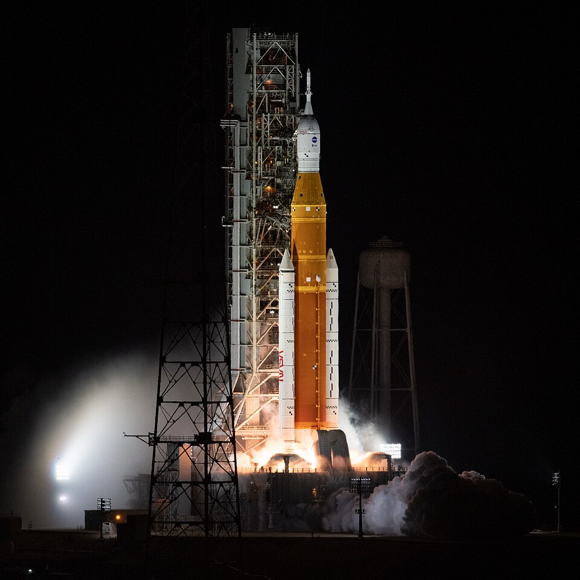
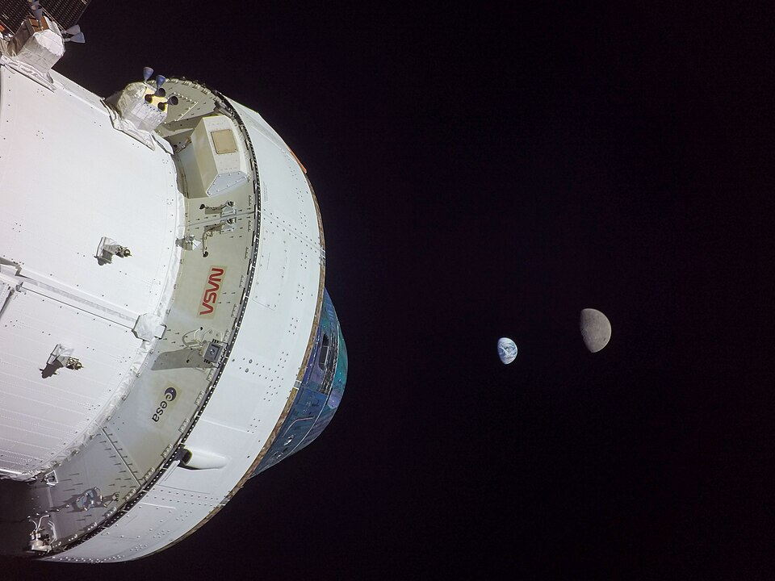
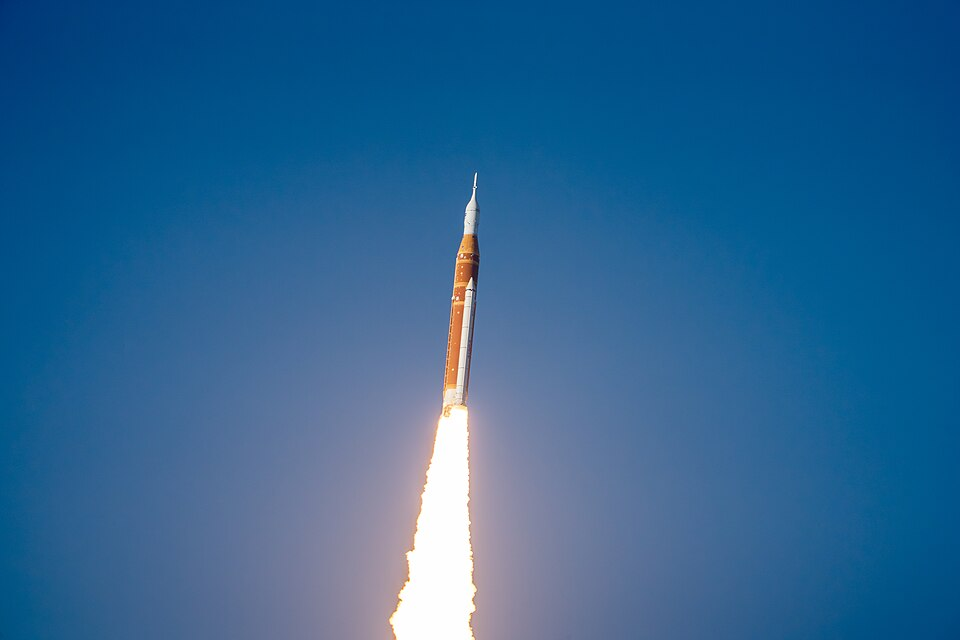
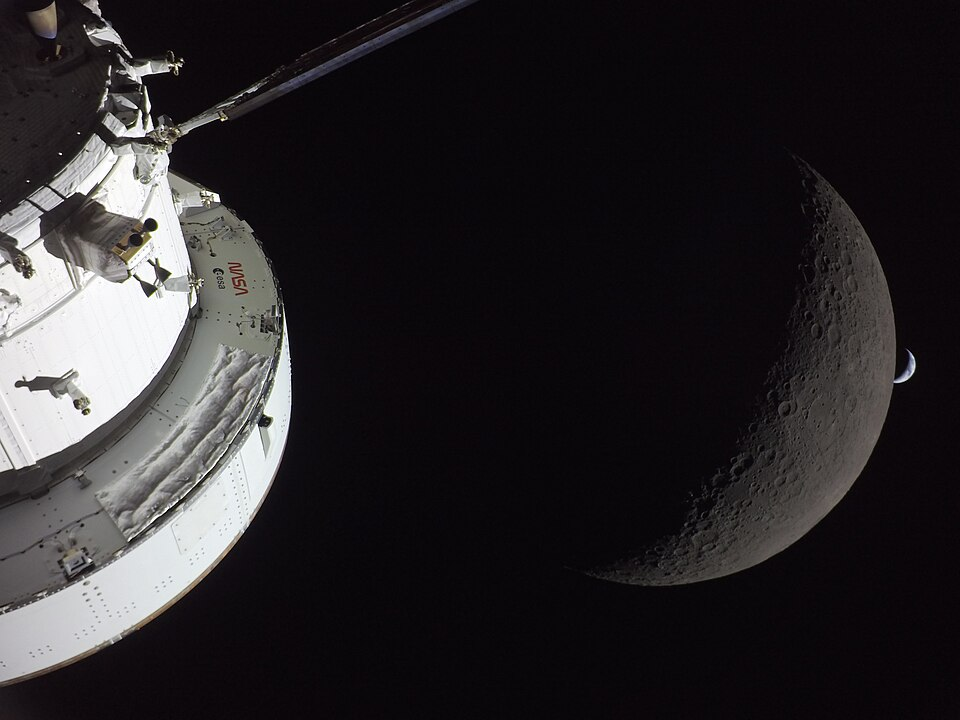

아르테미스 계획
반세기 만에 다시 달로
KEY FIGURES핵심 숫자
98m
SLS 로켓 높이
406,771km
2호가 간 가장 먼 거리 (인류 최고 기록)
4명
2호 승무원
2028년
첫 유인 달 착륙 목표 (4호)
MISSION PLAN단계별 계획
- [OK]1호: 무인 시험 비행 (2022)
- [OK]2호: 유인 달 근접 비행 (2026)
- [..]3호: 지구 궤도에서 착륙선 도킹 시험 (2027 예정)
- [..]4호: 유인 달 남극 착륙 (2028 목표)
- [..]이후 해마다 달 착륙 (목표)
BRIEFING개요
아르테미스 계획은 아폴로 이후 반세기 만에 사람을 다시 달에 보내기 위한 NASA의 유인 달 탐사 계획이다. 이름은 그리스 신화에서 아폴로의 쌍둥이 누이인 달의 여신 아르테미스에서 따왔다. 새 대형 로켓 와 유인 우주선 을 쓰고, 달 표면에 내려갈 때는 민간 기업이 만드는 을 이용한다.
목표는 잠깐 다녀오는 데 그치지 않고, 얼음이 있을 것으로 보이는 에 오래 머무는 것이다. 2022년 무인 시험 비행에 이어 2026년 4월 아르테미스 2호가 우주비행사 4명을 태우고 달 뒤편을 돌아왔다. 여러 나라가 함께하는 계획으로, 한국도 2021년 에 서명해 참여하고 있다.
HEIGHT COMPARE높이 비교
98mSLS
(아르테미스)
(아르테미스)
110.6m새턴 V
(아폴로)
(아폴로)
105.3m소련 N1
70m팰컨 9
ARTEMIS II CREW2호 승무원
- 리드 와이즈먼
- 사령관 · NASA
- 빅터 글로버
- 조종사 · NASA — 달을 돌아온 첫 유색인
- 크리스티나 코크
- 임무 전문가 · NASA — 달을 돌아온 첫 여성
- 제러미 핸슨
- 임무 전문가 · 캐나다 우주국 — 달을 돌아온 첫 비미국인
오리온 우주선 이름은 승무원이 지은 '인테그리티(Integrity)'
RECORDS비행 기록
- 1호 비행
- 약 25.5일, 무인
- 1호 최대 거리
- 지구에서 432,210km (사람이 탈 수 있는 우주선 최고 기록)
- 2호 비행
- 9일 1시간 32분, 유인
- 2호 최대 거리
- 406,771km — 아폴로 13호(400,171km)를 넘은 인류 최고 기록
- 2호 달 최근접
- 달 뒷면 상공 약 6,545km
MISSION LOG주요 기록 (UTC)
- NASA, 달 귀환 계획 이름을 '아르테미스'로 발표
- 아르테미스 약정 첫 서명 (8개국)
- 한국, 열 번째로 아르테미스 약정 서명
- 아르테미스 1호 발사 (무인), 오리온이 달 궤도를 돌고 귀환
- 오리온 태평양 착수, 약 25.5일 비행 마침
- 아르테미스 2호 발사, 우주비행사 4명 탑승
- 달 뒷면 근접 비행, 인류가 지구에서 가장 멀리 간 기록 경신
- 태평양 착수, 무사 귀환
- 아르테미스 3호: 지구 궤도에서 상업용 착륙선과 도킹 시험
- 아르테미스 4호: 아폴로 이후 첫 유인 달 착륙
날짜·시각은 세계 표준시(UTC) 기준 · 시각 옆 작은 글씨는 한국 시간(UTC+9)
ARCHIVE PHOTOS기록 사진




REFERENCES참고 자료
- 아르테미스 계획 ↗위키백과 (한국어)
- Artemis program ↗위키백과 (영어)
- Artemis ↗NASA
- Artemis I ↗NASA
- Artemis II ↗NASA
- NASA Welcomes Record-Setting Artemis II Moonfarers Back to Earth ↗NASA 보도자료 (2026)
- NASA Marches Toward Artemis III Mission in 2027, Names Crew Members ↗NASA 보도자료 (2026)
사진 출처는 각 사진 아래에 표시 · 수치와 날짜는 공개 기록을 바탕으로 했으며, 자료에 따라 조금씩 다를 수 있음